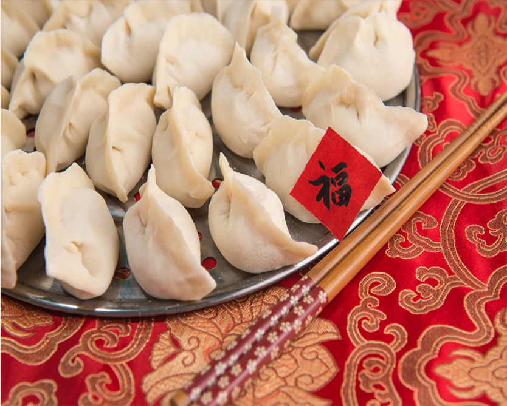

年糕春节吃年糕，“义取年胜年，籍以祈岁稔。”寓意万事如意年年高。年糕的种类有：北方有白糕饦、黄米糕；江南有水磨年糕；西南有糯粑粑；台湾有红龟糕。汉代杨雄的《方言》一书中就已有“糕”的称谓，魏晋南北朝时已流行。贾思勰《齐民要术》记载了制做方法。明、清时，已发展成市面上一种常年供应的小食，并有南北风味之别。北方年糕有蒸、炸二种，南方年糕除蒸、炸外，尚有片炒、汤煮诸法。
饺子
北方年夜饭有吃饺子的传统，但各地吃饺子的习俗亦不相同，有的地方除夕之夜吃饺子，有的地方初一吃饺子，北方一些山区还有初一到初五每天早上吃饺子的习俗。吃饺子是表达人们辞旧迎新之际祈福求吉愿望的特有方式。按照我国古代记时法，晚上11时到第二天凌晨1时为子时。“交子”即新年与旧年相交的时刻。饺子就意味着更岁交子，过春节吃饺子被认为是大吉大利。另外饺子形状像元宝，包饺子意味着包住福运，吃饺子象征生活富裕。与北方不同，南方的年夜饭通常有火锅和鱼。火锅沸煮，热气腾腾，温馨撩人，红红火火；“鱼”和“余”谐音，象征“吉庆有余”，也喻示着生活幸福，“年年有余”。南方还有一些地方过春节讲究吃年糕，年年高（糕），象征收成一年比一年高，境界一年比一年高。
元宵
南方叫做“汤圆”，在江苏，上海等地，大年初一早晨都有吃汤圆的习俗。元宵节，道教称之为“上元节”。据元代伊土珍《（女郎）环环记》引《三余帖》记：嫦娥奔月后，羿思念成疾。正月十四日夜忽有童子求见，自称为嫦娥之使，说：“夫人知君怀思，无从得降，明日乃月圆之候，君宜用米粉作丸，团团如月，置室西北方，叫夫人之名，三夕可降而。”羿如法而行，嫦娥果然降临。可见元宵节吃元宵，是取“团团如月”的吉祥之意。明代时，元宵在北京已很常见，做法也与今天无异。清代康熙年间朝野盛行“八宝元宵”、马思远元宵。民国初年还有袁世凯因元宵与“袁消”音同，故下令禁喊元宵之事。
春卷
春卷也叫春饼，立春吃春饼是中国一种古老风俗。晋代已有“五芋盘”即“春盘”，是将春饼与菜同置一盘之内。唐宋时立春吃春饼之风渐盛，皇帝并以之赐近臣百官，当时的春盘极为讲究：“翠缕红丝，金鸡玉燕，备极精巧，每盘直万钱”。民间也用以互相馈赠。吃春饼的习俗也影响了兄弟民族。如耶律楚律随成吉思汗征西域时就曾命厨师作春盘，并作诗日：“昨朝春日偶然忘，试作春盘我一尝。本案初开银线乱，砂瓶煮熟藕丝长。匀和豌豆揉葱白，细剪萎蒿点韭黄。也与何曾同是饱，区区何必待膏梁”。春饼发展到今天，形制随地而异，食用时间也因地而别。有烙制、也有蒸制；或大如团扇，或小如荷甲。
腊八粥
“腊八节”这一天在中国民间有吃腊八粥的习俗。喝腊八粥在中国已有千年历史，腊八粥又称“大家饭”。每逢腊八这一天，不论富人还是穷人，家家都要喝腊八粥。《祀记·郊特牲》说蜡祭是“岁十二月，合聚万物而索飨之也”，腊八粥以八方食物合在一块，和米共煮一锅，是合聚万物、调和千灵之意。最早的腊八粥是用红小豆来煮，后经演变，加之地方特色，逐渐丰富多彩起来。“腊八粥”又叫“七宝粥”“五味粥”，不仅清香甜美，而且能畅胃气，生津液，因而颇受人们喜食。随着时代的发展，花样越来越多的腊八粥已发展成具有地方风味的小吃。
节日特点
岁时节日，亦被称为"传统节日"。它们历史悠久、流传面广，具有极大的普及性、群众性、甚至全民性的特点。
年节是除旧布新的日子。年节虽定在农历正月初一，但年节的活动却并不止于正月初一这一天。从腊月二十三（或二十四日）小年节起，人们便开始"忙年"：扫房屋、洗头沐浴、准备年节器具等等。所有这些活动，有一个共同的主题，即"辞旧迎新"。人们以盛大的仪式和热情，迎接新年，迎接春天。
年节也是祭祝祈年的日子。古人谓谷子一熟为一"年"，五谷丰收为"大有年"。西周初年，即已出现了一年一度的庆祝丰收的活动。后来，祭天祈年成了年俗的主要内容之一。而且，诸如灶神、门神、财神、喜神、井神等诸路神明，在年节期间，都备享人间香火。人们借此酬谢诸神过去的关照，并祈愿在新的一年中能得到更多的福佑。年节还是合家团圆、敦亲祀祖的日子。除夕，全家欢聚一堂，吃罢"团年饭"，长辈给孩子们分发"压岁钱"，一家人团坐"守岁"。
相关谚语
天增岁月人增寿，春满人间福满门
爆竹一声除旧，桃符万象更新
一夜连双岁，三更分两年
冬天麦盖三层被，来年枕着馒头睡
喜居宝地千年旺，福照家门万事兴